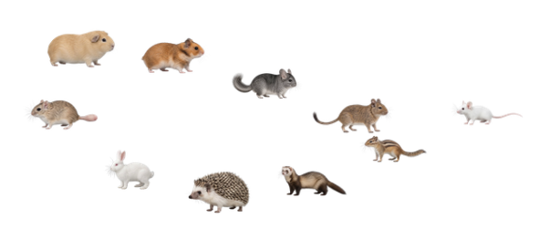

カーソル横で追従
カーソルの速さに合わせて歩き、止まるとその場で休みます。動物の上からも、その下のウィンドウをクリックできます。
Windows・Mac向けプレビュー版
小さな動物たちが、カーソルのあとをついてきます。 デグーやチンチラなど10種・19種類の見た目から、お気に入りの1〜10匹を選べます。
Windowsは64bit版です。Mac版は実機での動作確認前です。 ご利用前の注意をご確認ください。

カーソルの速さに合わせて歩き、止まるとその場で休みます。動物の上からも、その下のウィンドウをクリックできます。
1匹ずつ動物と毛色を指定できます。大きさは32・48・64・96pxから選べます。
トレイやメニューバーから一時停止・再開できます。選んだ動物や表示設定は、次回の起動にも引き継がれます。
お使いのパソコンに合う版を選んでください。いずれも v0.1.0-preview.1 です。
64bit（x64）向け。Windowsで動作確認済みです。
インストール不要版（ZIP）M1以降のMac・macOS 13以降。実機での動作確認前です。
Apple Silicon版（ZIP）Intel搭載のMac・macOS 13以降。実機での動作確認前です。
Intel版（ZIP）Macの種類は、Appleメニューの「このMacについて」で確認できます。
WindowsのZIP版は、アプリだけを取り出さず、展開したフォルダー全体を残してください。MacのZIP版は、展開したMofuMouseをアプリケーションフォルダーへ移します。
動物の画像・動きの制作にはAIを使用しています。
MofuMouse brings small animal companions to your cursor. Choose 1–10 animals independently from 10 species and 19 appearances, with four display sizes. They follow your cursor, rest when it stops, and let clicks pass through. Pause them from the tray or menu bar; your choices are saved. This is an early preview: Windows has been tested, while Mac hardware testing is pending. Downloads are unsigned; the Mac app is not notarized. Blue and sand degus use a still image while resting. Appearance and motion refinements are ongoing.